文档处理
在 RAG 系统中，文档处理（Document Processing）是整个知识库构建流程中的关键环节之一。虽然 在整体架构中，向量数据库和大语言模型往往更受关注，但在实际工程实践中，文档处理往往决定了 RAG 系统检索效果的上限。如果文档解析不准确、文本切分不合理或元数据设计混乱，即使使用性能 再强的 Embedding 模型和向量数据库，也很难获得理想的检索结果。 因此，在构建 RAG 知识库时，需要建立一套完整的文档处理 Pipeline，使原始数据能够被有效转换为 适合检索的结构化内容。一般来说，文档处理主要包括 文档解析、Chunking（文本切分）以及 Metadata 设计三个核心步骤。
文档解析
文档解析（Document Parsing）是文档处理流程的第一步，其目标是将各种格式的原始文件转换为可 用于后续处理的纯文本或结构化文本数据。在实际应用中，企业知识库中的数据来源通常非常复杂， 常见的文件格式包括：
-
PDF 文档
-
Word 文档
-
Markdown 文件
-
HTML 网页
-
Excel 表格
-
内部系统导出的数据
不同格式的文件在解析方式上会存在很大差异。例如，PDF 文件往往包含复杂的排版结构，例如多栏 文本、表格和图片，如果直接提取文本，可能会出现内容顺序错乱的问题。因此，在解析 PDF 文档 时，通常需要借助专门的解析工具，以尽可能保留原始文档的结构信息。
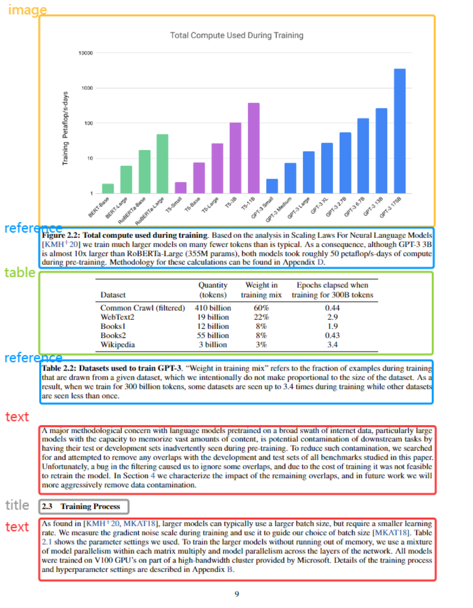
尽管 PDF（Portable Document Format）是一种通用、稳定、跨平台的文档格式，但它并不是为结构 化数据提取设计的格式，这也使得从中提取高质量、结构化的知识成为一项技术挑战。主要难点包 括：
- 格式复杂、结构不统一
PDF 文件更像是“数字版的打印纸张”，其本质是页面渲染信息，而不是像 HTML、XML 那样的结构 化标记语言。这导致同样是一个段落或表格，不同的 PDF 文件可能用完全不同的底层表示方式来编
码。因此：
-
标题和正文没有语义上的“层级结构”；
-
表格、列表、图像和段落难以准确分离；
-
• 多栏排版、复杂排版（如学术论文）易导致文本顺序错乱。
- 内容可能是图片而非文本
许多扫描版文档（如合同、书籍、报表等）将内容以图像形式嵌入 PDF，此时需要 OCR（Optical Character Recognition，光学字符识别）工具进行识别，但 OCR：
-
容易受图像质量、字体、旋转角度等因素影响；
-
误识率高，可能产生错别字或结构错位；
-
表格、公式识别精度更低。
3. 表格、图表提取困难
PDF 中的表格通常以线段 + 文本方式绘制，并非内嵌结构表格数据。这导致表格提取需依赖：
-
文字坐标分析；
-
网格线推断；
-
机器学习辅助模型等。 而图表（如折线图、饼图）更难提取出其中的数据值，往往只能通过图像分析手段尝试“反推”。
- 跨页内容难以关联
如长段落、长表格跨越多个页面时，PDF 中并没有“语义信息”标明它们属于同一个结构，需人工或 智能算法识别其上下文关联性。
- 不同语言、字体、排版标准差异
特别是在多语种文档处理（如中英文混排、右到左语言等）中，不同语言的排版逻辑和标点规则可能 导致解析工具无法正确断句、分段，影响后续向量化建库质量。
基于规则的方法
这是最早期也是最基础的 PDF 解析思路，依赖 PDF 文档的结构信息（如页数、文本框、字体大小、位 置等），通过手动设计规则提取内容。以 Python 中的 PyPDF2 或 PyPDF4 为代表，它们支持读 取 PDF 文件中的文本、页码、元信息等。 以最基础的PyPDF库为例进行介绍。
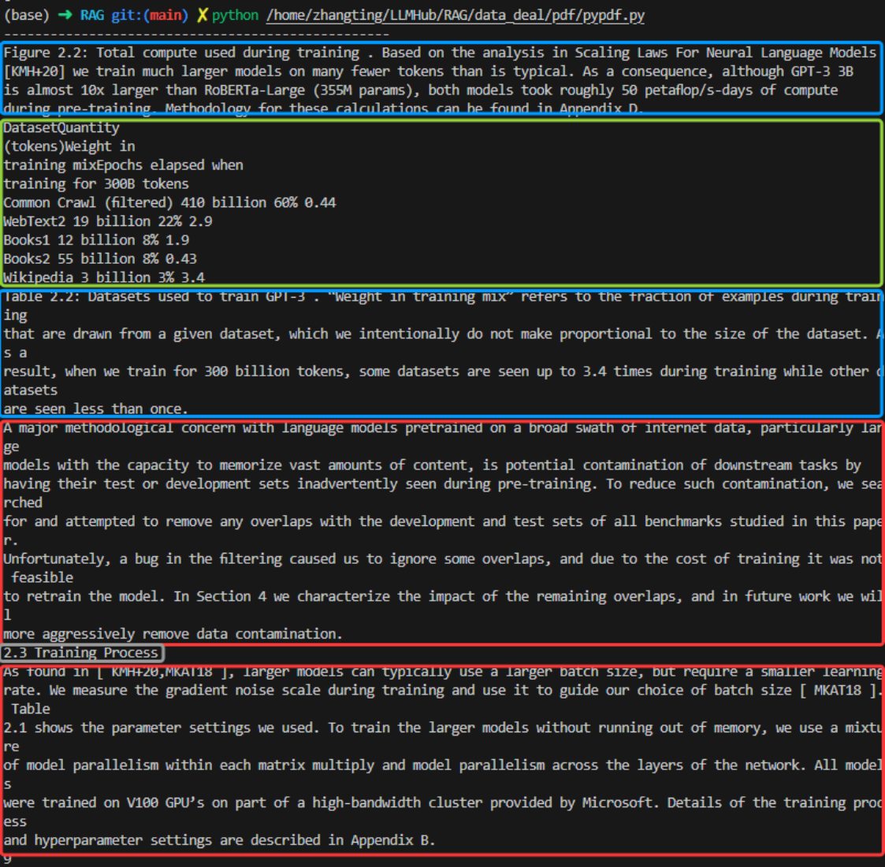
从图中的分析结果可以看到，PyPDF不对图片进行识别，输出的格式只支持txt，并且在文档换行的时 候对应的识别结果也出现换行，段落完整性较差。
类似的基于规则的方法还有PyMuPDF等等， 这种方法适用于对文档结构非常了解的场景，如内部模板 化文档、批量合同抽取等。
基于深度学习的方法
为了解决规则方法在结构复杂文档中的局限，近年来出现了以 深度学习模型 为核心的解析方法。典型 代表如 LayoutParser 、 Donut 、 DocTR 等，结合图像分割、目标检测模型，对 PDF 页面进行 版面分析（Layout Analysis），流程大致如下：
-
将 PDF 页面渲染为图像；
-
使用模型识别出页面中的“标题”“段落”“表格”“图像”等区块；
-
再使用 OCR 对每个区块进行文本识别；
-
结合位置、标签进行结构化重构。
以PaddleOCR团队自研的智能文档分析系统PP-StructureV2为例，系统首先经过图像矫正模块，判断 图方向并完成转正，随后进行版面信息分析和关键信息抽取。图像经过版面分析模型对文件不同区域 进行划分，包括文本，图像，表格等等，随后对不同的区域进行识别，最后使用版面恢复将其恢复为 与原始文件布局一致的文件中。
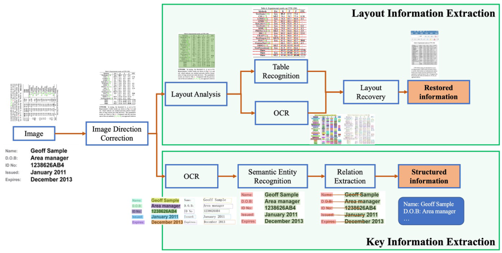
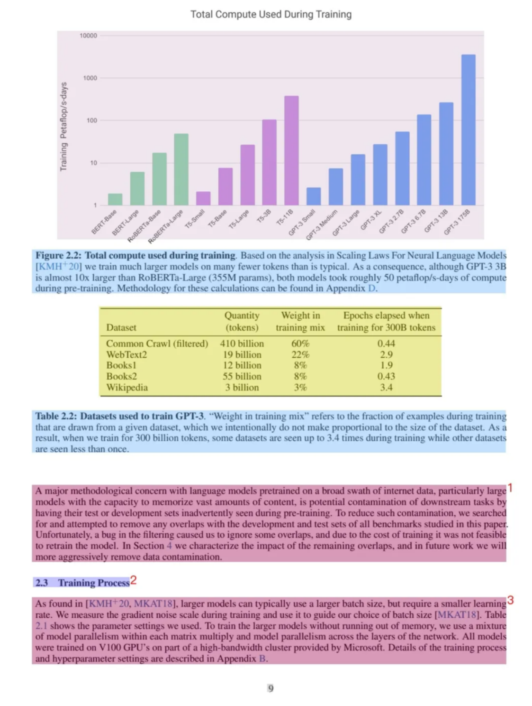
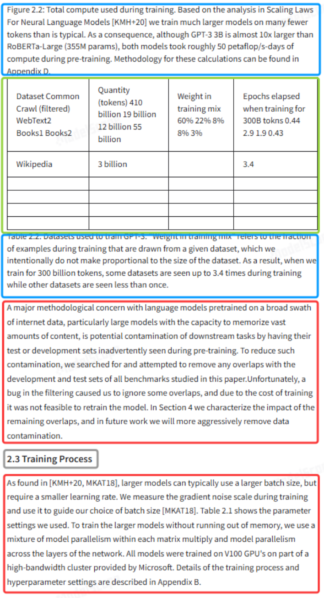
从上面的识别结果可以看出，相比于基于规则的识别方法，深度学习方法段落完整性较好，可适应多 种布局；模型可迁移至各类文档（论文、发票、报告等）；但是表格识别和图像识别仍然不够准确， 同时需依赖 GPU 计算资源，对于语义理解和上下文推理仍然有限。
基于多模态大模型的方法
随着多模态大模型的发展，PDF 内容解析开始进入“端到端智能理解”阶段。这类方法利用图文输入 能力强大的模型（如 GPT-4V、Gemini、Claude、MiniGPT-4），直接输入页面截图或文档图片，由大 模型进行内容提取与理解。典型方式如下：
-
将 PDF 渲染成图像；
-
提问如：“请总结这页的主要内容”“这页的表格中第一列是什么含义”；
-
LMM 模型结合视觉+语言能力返回结构化或自然语言内容。
以Qwen2.5-VL系列模型为例，在 Qwen2.5-VL 中设计了一种更全面的文档解析格式，称为 QwenVL HTML 格式，它既可以将文档中的文本精准地识别出来，也能够提取文档元素（如图片、表格等）的 位置信息，从而准确地将文档中的版面布局进行精准还原。
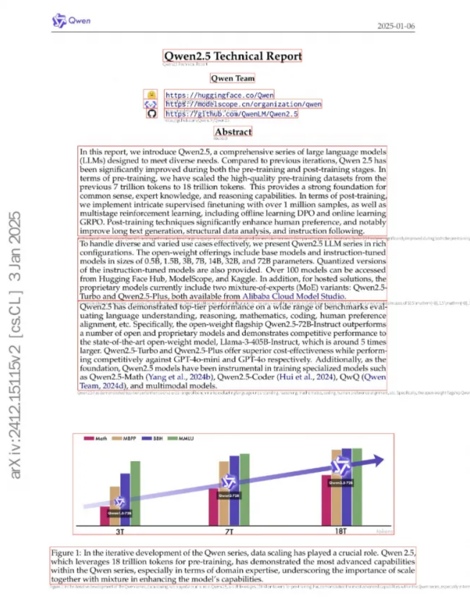
多模态模型无需预定义规则或模型训练，能处理复杂结构、跨页关联、图表内容，并支持语义级别的 问答、摘要、推理。但是成本高（API调用或推理资源），对上下文窗口长度、图像清晰度等有一定要 求。
Chunking 策略
在完成文档解析之后，下一步是进行 Chunking（文本切分）。由于大语言模型存在上下文长度限 制，同时 Embedding 模型在处理过长文本时也会出现语义模糊的问题，因此通常需要将长文档拆分为 多个较小的文本块（Chunk）。
Chunk 的大小和切分方式会直接影响检索质量。如果文本块过大，可能会包含多个不同主题，从而降 低向量语义的准确性；如果文本块过小，则可能导致上下文信息不足，使模型难以理解完整内容。
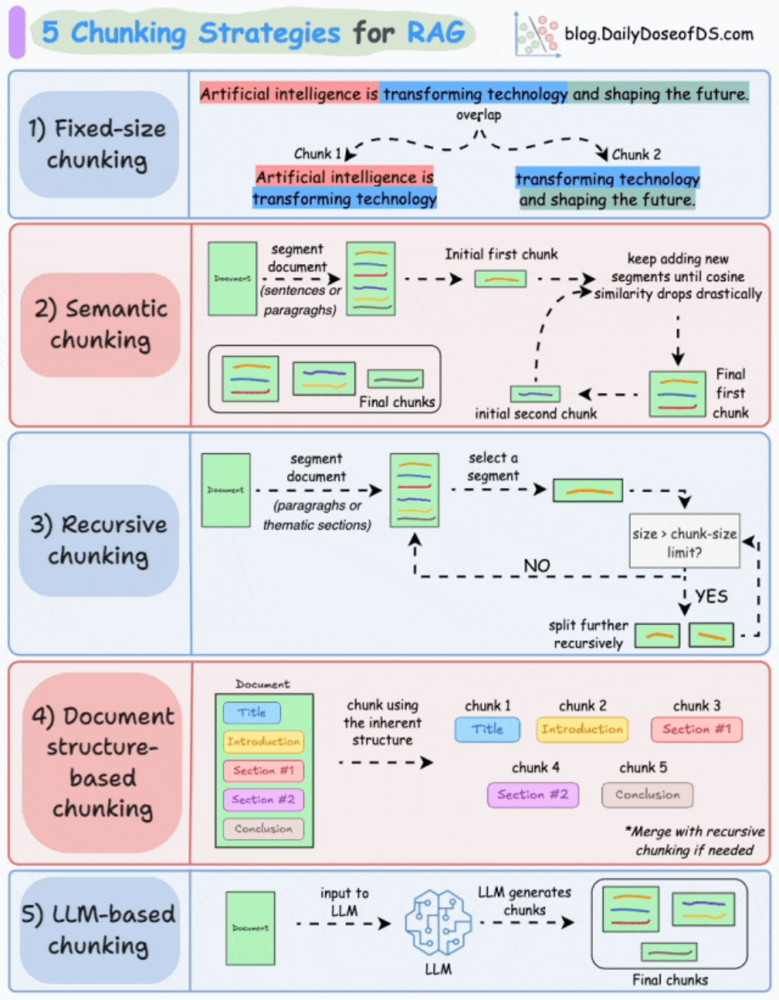
固定大小切分
将文档按照预设的字符数、词数或句子数进行等间隔划分。例如每段包含500个字符或5个句子。该方 法实现简单，但容易打断语义边界，可能导致上下文缺失或内容重复。
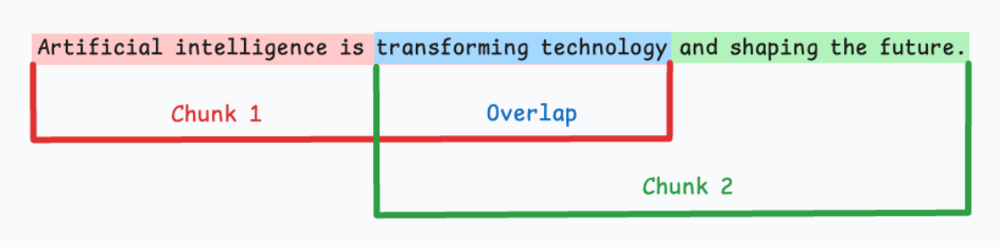
语义切分
通过自然语言处理技术（如句向量相似度、话题建模等）判断文本语义的边界，在语义上自然断句。
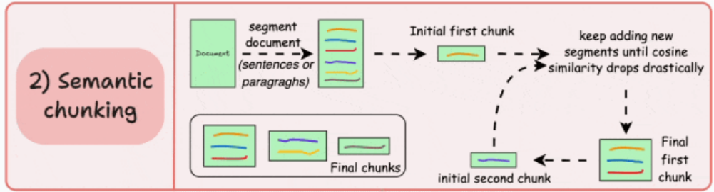
以向量相似度为例，将句子或段落转换为向量，通过计算相邻句段的余弦相似度，如果判断两个段落 语义上属于同一单元，那么就进行合并。
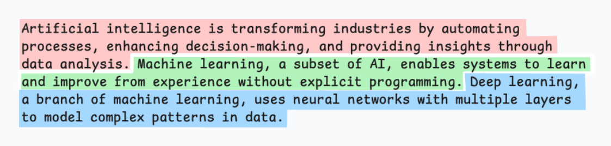
这种方式能提升分块的语义连贯性，适用于逻辑紧密的文章，但计算代价较高，依赖模型质量。
递归切分
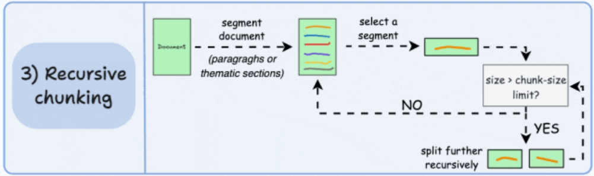
在保持固定长度的同时，尝试以语义结构（如段落、句子、标点）为边界递归地切分文本。若段落太 长无法容纳于块中，则再递归切分为句子，直到满足长度要求。
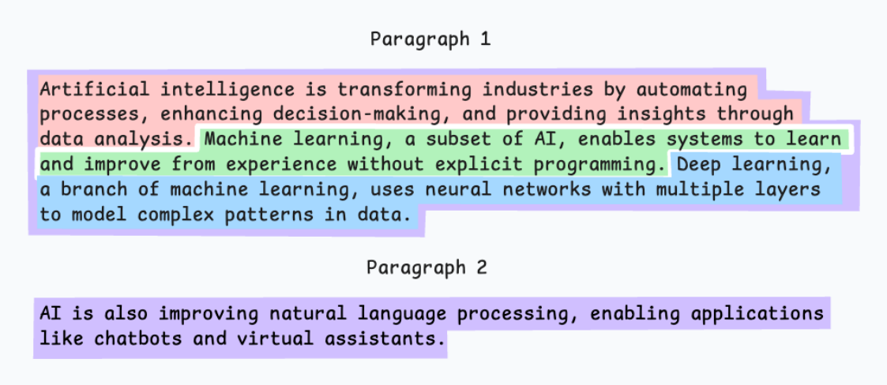
相比纯固定切分，该方法能更好地保留语义完整性。
基于文档结构的切分
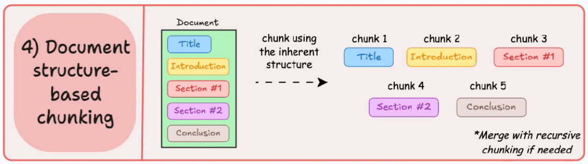
利用原始文档的结构信息（如HTML标签、Markdown标题、PDF书签、Word段落等）进行切分。比 如以章节、小标题、列表项为边界进行分块。
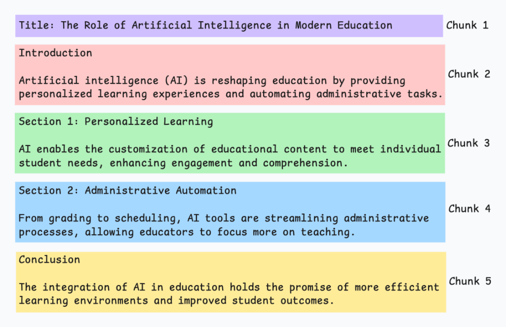
这种方式在处理格式规范的文档（如手册、报告）时效果尤为突出。
基于LLM的切分
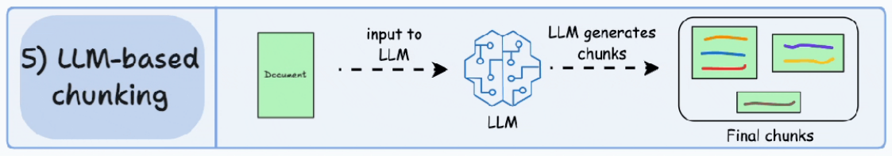
借助大语言模型来“理解”文档内容并主动划定分块边界。例如，提示模型判断哪些段落构成完整的 语义单元，或根据任务需求生成最佳的分块方案。这种方式智能程度高，但计算成本也相对较大，适 合高精度应用场景。
Metadata 设计
在完成文本切分之后，每一个 Chunk 通常都会被附加一组 Metadata（元数据）。Metadata 的作用 是为文本块提供额外的信息，使系统在检索和生成阶段能够更好地理解数据来源和上下文关系。 常见的 Metadata 信息包括：
-
文档来源（source）
-
文档标题（title）
-
文档章节（section）
-
创建时间（timestamp）
-
作者或组织（author）
-
文档类别（category）
在 RAG 系统中，Metadata 不仅用于数据管理，还可以在检索阶段发挥重要作用。例如，在某些场景 下，系统可能只需要检索某一类文档，例如“产品手册”或“技术文档”，这时就可以通过 Metadata 进行过滤，从而提高检索效率和准确率。
此外，Metadata 还可以用于生成阶段。例如，当大模型输出答案时，可以通过 Metadata 提供引用来 源，使用户能够查看答案对应的原始文档。这种机制可以显著提高系统的可信度。
文档处理在 RAG 中的重要性
在 RAG 系统中，文档处理实际上决定了知识库的基础质量。如果文档解析混乱、文本切分不合理或者 元数据缺失，那么即使检索算法再先进，也很难获得高质量的检索结果。
因此，在实际工程实践中，许多团队会投入大量时间优化文档处理流程，包括：
-
构建稳定的文档解析 Pipeline
-
设计合理的 Chunk 切分策略
-
构建清晰的 Metadata 结构
通过这些优化，可以显著提升 RAG 系统的检索效果，从而让大语言模型生成更加准确和可靠的回答。